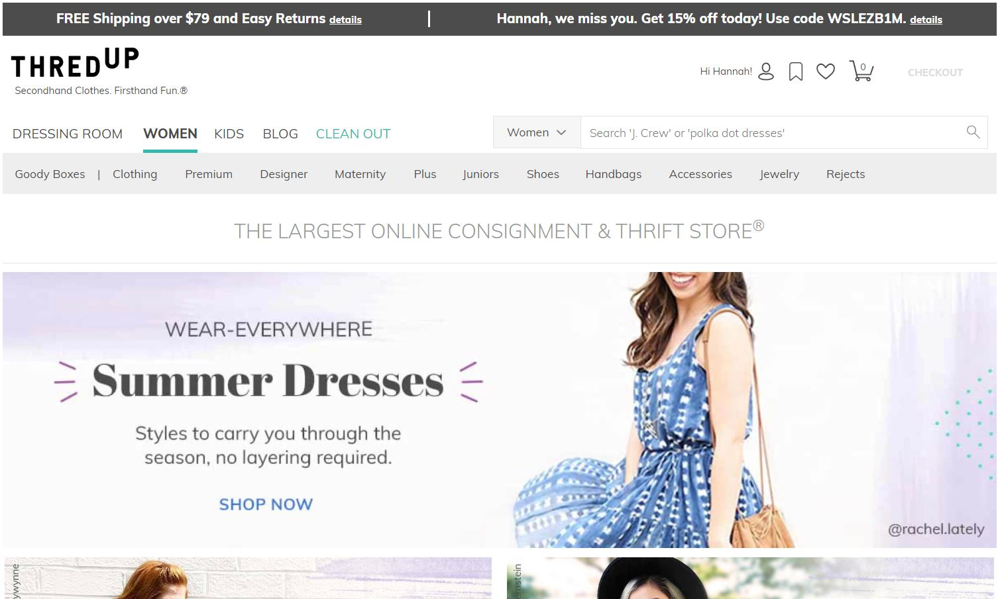

A well-designed website that I use quite often is Pinterest. This site is organized as an endless scroll which keeps new content coming until you are done browsing. The site lets you save the images, or pins, onto boards which can be named and used for certain topics such as photographs, cooking, fashion, or whatever else you can think of. The home page is made up of 5 columns. Each photo is scaled down to a certain width in order to fit, but the height is left at its scaled down version. The pins all have a preview of the title of the photo underneath in bold so that you can get an idea of what it is without clicking on it. The photo and the title is what makes up a pin.
When a pin is clicked on, you can view a large-scale version of the image, the title, additional content, and comments. A link to the source of the image can be found on most pins. Below it is pins that are considered "More like this." Clicking either "Home" or anywhere outside the pin box will bring you back to the home page.
The Explore tab lets you easily find pins based on specific topics such as "Meet the Robinsons" or "Funny GIFs for you" You can also find pins using general topics like "Trending," "Humor," or "Health." This page is great for finding new things you are interested in that would not normally pop up on your feed.
The search function does exactly what a search function normally does: it finds pins based on your search. I searched "nature" so that I could find beautiful nature photos to save to a board and potentially use as a background photo on my phone home screen or lock screen.
The account page allows you to view all of your boards and view what you have saved on them. There is also a new "section" feature which allows you to give the pins in a certain board a subtopic. For example, in my food board I could create a breakfast, lunch, dinner, dessert, and snack section and sort my saved pins even more.
I use this website often and I have never had any problems with trying to figure out where to find my saved pins or wondering what a certain feature
does.
ThredUp is a secondhand clothing site that is beautiful to look at and easy to use. The home page has large photos of what popular purchases currently are as well as deals you can find on the site. The color palate is pastel colors and the width of the boxes that include the trending purchase and deals are all similarly sized. They all have the same height and the widths, in total, are also the same. There are easy to navigate clothing categories, such as Women and Kids, as well as different categories for style of clothing like Designer, Maternity, and Handbags. You can also navigate to your account, bookmarked searches, favorited items, and shopping cart with the minimalistic buttons at the top right.
The style of clothing categories, when hovered over, generate a drop-down menu to view even more categories of clothing, such as dresses, shorts, and activewear. This makes it easy to immeadiately starting looking at the clothing that you want to look at without having to click through multiple pages to get there.
When typing in a search, the site will generate search suggestions as well as the first 4 result from your current search. The search suggestions help you to cut down on time to make the search. Being able to see the first 4 results from your current search helps you make sure that your search will give you the results you want. If it does not, you can backspace and try again rather than waiting for your first search to load before trying again.
Once you make a search, you can filter down your results even more using the Size, Brand, Color, and Price drop-down menus and checking off what you would like to see. The search results update as you select certain filters, but the drop-down menu stays open. This is nice because you do not have to click back into it every time you add a filter.
When viewing an individual clothing item, you are given the important information such as the brand, style, size, price, item details, measurements, materials, and photos of the item itself from different angles. This is the standard setup for any clothing site, and since it is the standard, it works. From this page you can also add the item to your cart or favorite the item and come back to it later.
I love using this site because it is easy to navigate and is aesthetically pleasing.
The website, arngren.com, is atrocious. The images of what is being sold are mashed onto the page in no particular order (number 8 on Nielson's list) . Also, the images are all different sizes which makes it difficult to determine each individual item. Some photos are so small and so close to each other that they look like they should be together, but they are actually completely separate items. There is an index to the left of the page but all the hyperlinks are different font sizes, different colors, and different languages. When clicked on, the color of the hyperlink does not change (number 3 on Nielson's list).
After clicking on the first link in the index, I am brought to an equally as awful page. The photos continue to be mashed together and in different sizes and locations. Some smaller images for decoration overlap some of the text, and in other spots, text overlaps other text. I am now unsure if this website is selling items or just giving information about the items. This page begins with the information written in Norwegian and then switches to English about three-quarters of the way down with Norwegian mixed in.
I clicked on Hobby & RC in the index and I do believe this site does sell items; however, it is so poorly designed that I was not 100% certain. The Hobby & RC page is organized like the home page. On the order page, there are multiple different colored text boxes that overlap each other. I did not see a web order form, but I did find what appears to be a print and mail in type of order form.
Whether this website was written fully in Norwegian or fully in English, it is a horrible website.
This is the website of my former high school, Mountain View (MVHS). The home page is not the worst thing I have seen. It has the slide show up top
with a calendar to the right. There are also quick links at the top for Academics, Students Activities, and Parent/Student Info.
This
biggest problem with the home page is the slide show. The slide about the MVHS Athletic Program says to click here for more information.
If you click the slide itself, it brings you to a separate page with text to the side with the link. The actual link to the MVHS Athletic
information is at the bottom of the slide. I did not automatically see that, so other visitors to the site probably did not see it either.

Another issue is the pages for Academics, Student Activities, and Parent/Student Info. When clicking on any of the three, it brings you to a new page that says "Information regarding [Link Content] can be found here! See the Links on the right!" This space on the website should give an explanation of what can be found through the links to the right or additional information that may not be found in any of the other links. They could also add links to commonly accessed items that are within other links so that visitors do not have to search for a buried link. The links on the right side of the page also do not change color when you click on them (number 3 on Nielson's list). This could lead to frustration if a parent or student is searching for something but cannot remember which pages they have already checked.
The Menu button contains the same links in Academics, Student Activities, and Parent/Student Info as well as more information on School Info and Departments. After checking that the links under the Menu are the same as the links on the Academic page, I think that the three links at the top can be removed and have just the menu item up top. Or each main topic in the menu can have its own link at the top with a drop-down menu just like the main menu currently has.
This website is well designed, but some of the important features are not setup in the best way possible.
(Just in case the Norwegian website does not count.)
This website is one big advertisement (number 7 on Nielson's list). There is no table of contents as the site was created just for this one
product. There are links at the bottom that bring you to other pages or generates a pop-up that contains information.
The top half of the page
looks like something you would receive in the mail. It contains the basic information about the product such as pricing, benefits and features, an
image of the product, and an image of happy people using the product. What I would consider the "back" of the advertisement is directly
below and contains a longer description of the product as well as photos of the product in use.
The site contains rather large sized text as it is likely meant for an older audience. If you click on "Order Now," either at the top right or inside the grey box, the page scrolls down to an order form. It does not bring you to a new page of the website. It also appears as if there is an advertisement for the product to the right of the order form. This is overkill it contains less information that is found above, and it contains less information.
The links at the bottom of the page are not designed any better than the home page. The Customer Server page contains a short paragraph with the phone number and the company address below. It also contains another advertisement for the product, like the one that appears next to the order form and an order form. The Shipping Policy, Return Policy, and Security Policy links generate pop-ups containing little information. The Privacy Policy page contains another advertisement and the order form. The Order Form link scrolls the page up to the order form on that page.
It is completely unnecessary to put the order form on almost every page of the website. The order form should be its own page and all links to the
order form should redirect to that page. This website, as a whole, is very poorly designed.